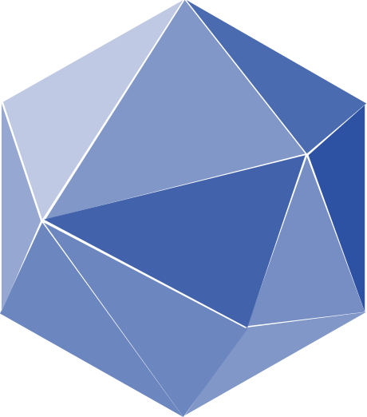

<ion-header id="header--mainPage">
    <ion-toolbar class="header__wrapper">
        <ion-title class="app-name">Gourmet Fridge</ion-title>
        <div class="main-logo-wrapper">
            
        </div>
    </ion-toolbar>
</ion-header>

<ion-grid id="main-section" class="button-grid main-page">
    <ion-row>
        <ion-col class="button-wrapper">
            <ion-button fill="clear" class="button button-large search-button" [routerLink]="['/search']">
                <ion-icon class="search--custom" src="../../assets/icon/search.svg"></ion-icon>
            </ion-button>
        </ion-col>

        <ion-col class="button-wrapper">
            <ion-button fill="clear" class="button button-large shopping-list-button" [routerLink]="['/shopping_list']">
                <ion-icon class="shopping_list--custom" src="../../assets/icon/shopping_list.svg"></ion-icon>
            </ion-button>
        </ion-col>

    </ion-row>

    <ion-row>

        <ion-col class="button-wrapper">
            <ion-button fill="clear" class="button button-large add-button" [routerLink]="['/new_recipe']">
                <ion-icon class="add--custom" src="../../assets/icon/plus.svg"></ion-icon>
            </ion-button>
        </ion-col>

        <ion-col class="button-wrapper">
            <ion-button fill="clear" class="button button-large barcode-button" [routerLink]="['/barcode']">
                <ion-icon class="barcode--custom" src="../../assets/icon/barcode.svg"></ion-icon>
            </ion-button>
        </ion-col>

    </ion-row>

    <ion-row>

        <ion-col class="button-wrapper">
            <ion-button fill="clear" class="button button-large settings-button" [routerLink]="['/settings']">
                <ion-icon class="settings--custom" src="../../assets/icon/gears.svg"></ion-icon>
            </ion-button>
        </ion-col>

        <ion-col class="button-wrapper">
            <ion-button fill="clear" class="button button-large fridge-button" [routerLink]="['/fridge']">
                <ion-icon class="fridge--custom" src="../../assets/icon/fridge.svg"></ion-icon>
            </ion-button>
        </ion-col>
    </ion-row>
</ion-grid>
